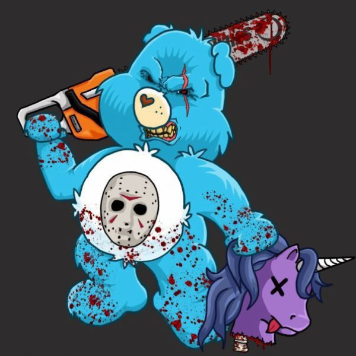

« Où diable , où suis-je tombé(e) !?! »
« Quel est donc ce site de cochons ailés, de licornes et chatons sur fond de paillettes psychédeliques ?!? »
Ce sont sans doute là quelques-unes des innombrables questions que vous vous posez peut-être en découvrant mon carnet de bord.
« Carnet de bord ? »
Oui, c’est comme ça que j’ai voulu mon site : mon évolution tout le long de cette préformation. Qui j'étais avant et celle que je suis devenue vers la fin.
Du coup, je devais commencer par d'abord vous montrer ce que le simple quidam ne peut pas voir: cette part de moi que je cache en général, exubérante et un un peu en décalage du monde qui tranche sans doute avec l’image que je donne de prime abord. Pour ensuite vous faire partager mon évolution pendant cette préformation de six semaines.
Commençons par le début : qui suis-je le 22 août 2022 ?
Ce matin, je suis une « grande fille » de 22 ans dans la tête (41 officiellement - mais chuuuuuuuuuuuuuut) stressée par le nouveau tournant que va prendre sa vie.
En effet, après avoir travaillé plusieurs années dans des magasins de détails puis plus de 10 ans chez Proximus, je me retrouve sans emploi depuis mars 2020. Sans compter que le Covid n'a pas amélioré mon goût pour les interactions sociales avec des inconnus.
Mais c'est sans compter que depuis longtemps je brûle du désir de réinventer ma vie professionnelle pour quelque chose de plus épanouissant. Comme j’aime être indépendante et être apte à résoudre les choses par moi-même - même en devant faire preuve de créativité, j’ai cherché le secteur qui me paraissait la plus adaptée à mon caractère et mes désirs.
Et pourquoi pas dans l'informatique? Diantre, c'est tellement vaste comme secteur.
Du coup, j'ai fait une mini formation de 5 semaines en 2020 chez Interface3 et celle-ci m’a permis de goûter aux différentes facettes de ce monde qui me paraissait si opaque, mais dont il suffit d’avoir quelques clefs pour réaliser qu’il est fascinant. Hardware et réseau ? pas trop mon truc. Front ? Back ? UX ? Testing ? difficile de trancher. Mais en tout cas, je veux me donner les moyens de faire une chose qui me plait.
Et donc me voici, limite tremblante d’appréhension et d’excitation.
Et le rapport avec le coté kitsch de ce carnet ?
Ben… Ce projet, c’est l’occasion de s’amuser et de montrer cette petit grain de folie qui vit en moi et comment j'aime voir détourner le pseudo-glamour. Surtout que moi, le strass et les paillettes… Je suis plutôt un bisounours.
